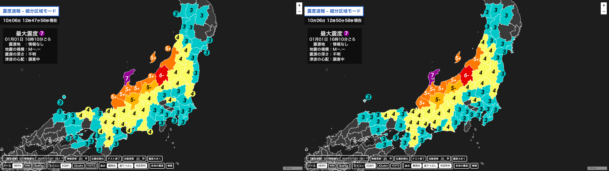

アップデートの詳細は以下のとおりです。
-
新機能
- 細分区域モードで表示される「震度速報」の震度アイコンの位置計算を、従来の標準地図システムのアルゴリズムから新しい固定のデータベースへ変更しました。
これにより、離島や細長い区域でも中心地区に震度アイコンが表示できるようになったうえ、震度アイコンも整列して表示されわかりやすく見やすい表示になりました。
 左：改善前 、 右：改善後 - 細分区域モードで表示される「震度速報」の震度アイコンの位置計算を、従来の標準地図システムのアルゴリズムから新しい固定のデータベースへ変更しました。